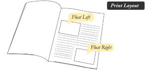
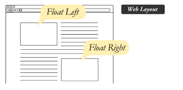
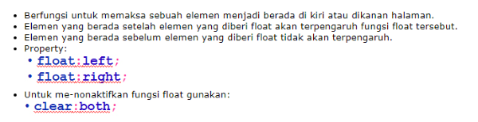
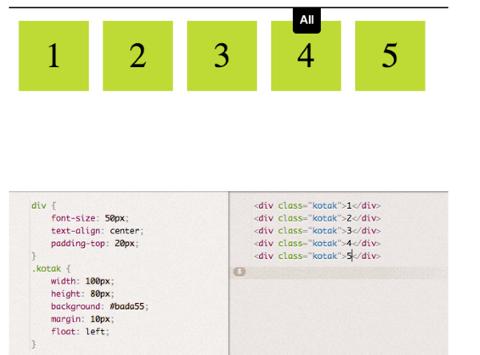
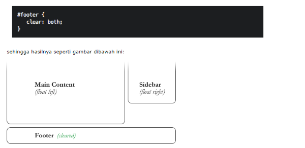

-
Float
Dulunya, ketika para developers pertama kali melakukan transisi dari HTML layout berbasis tabel ke layout tanpa tabel, salah satu CSS property yang memberikan peran yang sangat penting, css property itu adalah float. Untuk materi kali ini, kita akan membahas apa itu Float dan bagaimana float ini memberikan efek terhadap elemen. Agar lebih memahami bagaimana float digunakan, silahkan amati gambar dibawah ini.
 
text bayangan
-
Tujuan CSS Folat

-
Contoh Float

-
Menghilangkan Float
Untuk menghilangkan fungsi float pada halaman, gunakan property clear. Sebuah elemen yang diberi property clear tidak akan pindah posisi untuk mengisi kekosongan pada elemen diatasnya. Ilustrasinya dapat dilihat pada gambar dibawah ini:

text bayangan
text bayangan
Page 3 of 5